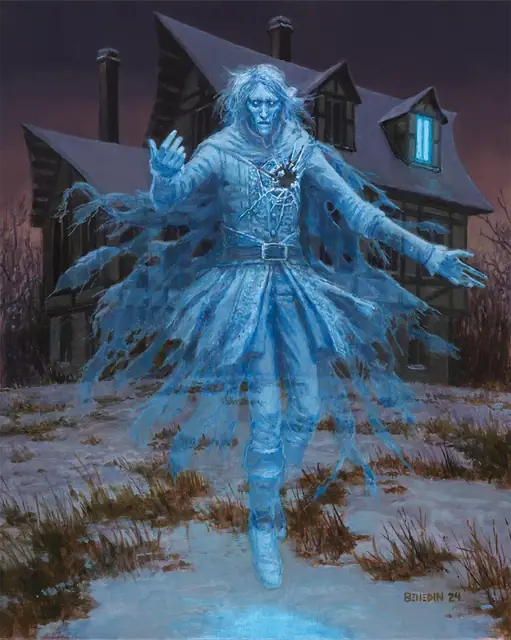

Привидение
Ghost
Средняя Нежить, Нейтральная

Класс Защиты 11 Инициатива +1 (11)
Хиты 45 (10к8)
Скорость 5 футов, Полёта 40 футов (парит)
| мод | спас | ||
|---|---|---|---|
| СИЛ | 7 | −2 | −2 |
| ЛОВ | 13 | +1 | +1 |
| ТЕЛ | 10 | +0 | +0 |
| мод | спас | ||
|---|---|---|---|
| ИНТ | 10 | +0 | +0 |
| МДР | 12 | +1 | +1 |
| ХАР | 17 | +3 | +3 |
Сопротивление урону Дробящий, Колющий, Рубящий, Звук, Кислота, Огонь, Холод, Электричество
Иммунитеты Некротический, Яд; Испуганный, Истощение, Окаменевший, Опрокинутый, Опутанный, Отравленный, Очарованный, Парализованный, Схваченный
Чувства Тёмное зрение 60 футов, пассивное Восприятие 11
Языки Общий
Опасность 4 (1 100 опыта; БВ +2)
Особенности
Эфирное зрение. Привидение может видеть в пределах 60 футов на Эфирном плане, пока находится на Материальном.
Бестелесное перемещение. Привидение может перемещаться через других существ и объекты, как если бы они были Труднопроходимой местностью. Он получает 5 (1к10) Силового урона, если завершает свой ход внутри объекта.
Действия
Мультиатака. Привидение совершает две атаки Иссушающим касанием.
Иссушающее касание. Бросок рукопашной атаки: +5, досягаемость 5 фт. Попадание: 19 (3к10 + 3) Некротического урона.
Эфирность. Привидение сотворяет заклинание Эфирность, не требуя материальных компонентов (заклинательная характеристика — Харизма). Привидение видимо как с Материального плана, находясь в пограничье Эфирного плана, так и наоборот, но не может влиять на что-либо на другом плане, и ничто на другом плане не может влиять на него.
Ужасающее обличие. Спасбросок Мудрости: Сл 13, каждое существо в 60-футовом Конусе, способное видеть привидение и которое — не Нежить. Провал: 10 (2к6 + 3) Психического урона, и цель получает состояние Испуганный до начала следующего хода привидения. Успех: Цель получает иммунитет к Ужасающему обличию этого привидения на 24 часа.
Одержимость (Перезарядка 6). Спасбросок Харизмы: Сл 13, один видимый привидением Гуманоид в пределах 5 футах. Провал: Цель одержима привидением; после этого привидение исчезает, а цель получает состояние Недееспособный и теряет контроль над своим телом. Теперь привидение контролирует это тело, но цель по-прежнему воспринимает окружение. Привидение не может стать целью атак, заклинаний и прочих эффектов, кроме тех, что прямым образом нацелены на Нежить. Привидение сохраняет свою статистику, но использует Скорость одержимой цели, а также её модификаторы Силы, Ловкости и Телосложения.
Одержимость длится до тех пор, пока Хиты тела не опустятся до 0 или пока привидение Бонусным действием не покинет его. Когда одержимость оканчивается, привидение появляется в незанятом пространстве в пределах 5 футов от цели; цель получает иммунитет к Одержимости этого привидения на 24 часа.
Успех: Цель получает иммунитет к Одержимости этого привидения на 24 часа.
Бонус мастерства +2
Среда обитания Болота, Город, Подземье
Сокровища Любые
Привидение
Потерянная душа, неупокоенный дух
Привидения возникают, когда живые существа умирают в состоянии крайнего душевного потрясения или оставив незавершённым важное дело. Эти бесплотные духи посещают места, которые много для них значили, и не уходят, пока их дело не будет закончено или пока их не упокоят.
Выглядят привидения обычно как полупрозрачные подобия тех созданий, которыми были при жизни, — хотя некоторые носят следы смертельных ран, а облик других искажён до кошмарного состояния. Многие остро реагируют на действия, предметы или людей, напоминающих им о самых острых, полных эмоций моментах жизни. А особенно отчаянные или мстительные привидения способны вселяться в живых, чтобы добиться своего.